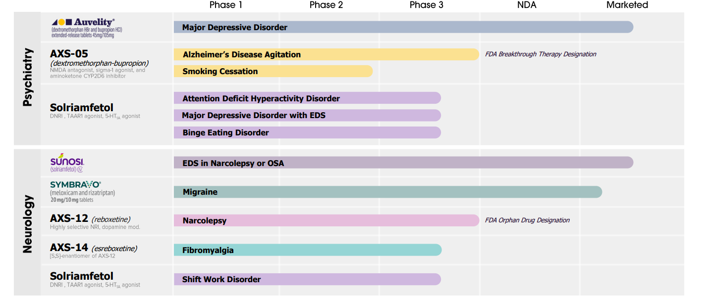

Management
Intro to Management: I have been following the company for nearly a year now. I have been impressed with their management team thus far, but my concerns are with execution risk with so many programs going on at one time. There are a few key areas of business that I think a management team has to demonstrate expertise in to build a long term winning biotech company.
Clinical Development: They need expertise at advancing drugs through the clinical development process. This company has advanced several drugs from Phase 1 through Phase 3 clinical development. They advanced Auvelity, Sunosi and Symbravo all the way through to commercial. They have AXS-12 which is up for submission and Auvelity up for another indication in Alzheimer's Agitation. They have several other indications working through the mid and late stage process. They have shown a lot of success. I would like to see some early stage programs now.
Regulatory Development: They need expertise at navigating the regulatory process with the FDA. They have advanced 3 drugs through commercial approval with Auvelity, Sunosi and Symbravo and moved AXS-12 into a filing along with Auveilty for Alzheimer's Agitation. They did have a big setback for AXS-14 in Fibromyalgia. They have do another phase 3 trail. Overall, they have multiple successes with FDA approvals so one setback does not worry me.
Managing Balance Sheet: They need expertise at managing the balance sheet. This company has done an excellent job at raising funds and developing shareholder value. They believe they have enough cash to reach cash flow positive. They have $303 million in cash and about $190 million in debt. Their cash burn suggests they could be cash flow positive by 2027.
Commercial Sales: The final key expertise for a management team is the ability to build a successful commercial sales team. So far, they have launched both Auvelty and Sunosi. The sales have been growing strong for these two drugs. They are now working to launch their third drug with Symbravo. They have shown they can run a commercial sales team with success. I would really like to see some sales from Symbravo before I am confident in their launch skill.
